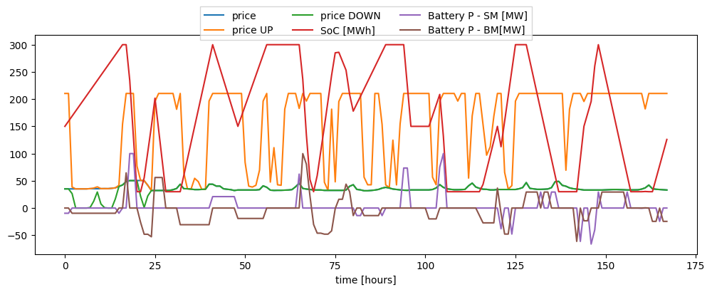
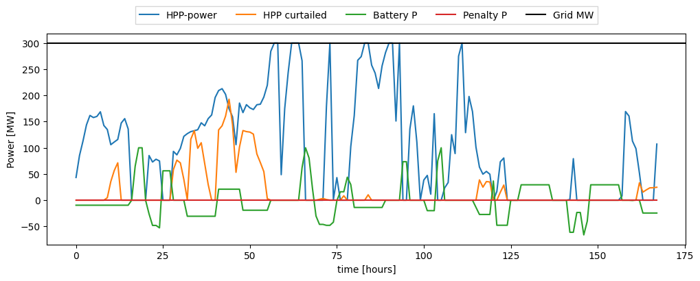
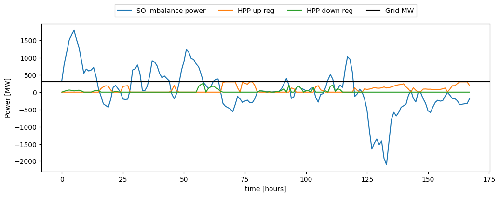

HPP with multiple energy markets
Evaluating the performance of a hybrid power plant using HyDesign
This HyDesign tutorial explores the evaluation and optimization of hybrid power plants (HPPs) operating in multiple energy markets. It highlights the complexities and benefits of managing HPPs across different market conditions, including spot markets, balancing markets, and long-term contracts. By following this guide, you will learn how to set up an HPP model that interacts with multiple energy markets and optimize its operation to maximize revenue and efficiency.
A hybrid power plant design consists on selecting the following parameters:
Wind Turbine design:
Clearance [m] (
clearance): Height from the ground to rotor tip at lowest posstion. This parameter controls the wind turbine hub height given a rotor radius:clearance = HH - R.Specific power of the wind turbine [MW/m2] (
sp): Defined assp = p_rated / ( pi * R^2 ), it controls the turbine rotor size for a given rated power. Turbines with lower specific power produce more power at lower wind speeds, but are more expensive.Rated power of the wind turbine [MW] (
p_rated)
Wind Plant design:
Number of wind turbines in the wind plant [-] (
Nwt)Wind power installation density [MW/km2] (
wind_MW_per_km2): This parameter controls how closely spaced are the turbines, which in turns affect how much wake losses are present.
PV Plant design:
Solar plant power capacity [MW] (
solar_MW)Surface tilt [deg] (
surface_tilt)Surface azimuth [deg] (
surface_azimuth)DC-AC ratio [-] (
solar_DCAC): This parameter controls how much over-planting of PV (in DC power) is connected to the inverters. It is common practice in PV design to havesolar_DCAC = 1.5.
Battery Storage design:
Battery power [MW] (
b_P)Battery energy capacity in hours [MWh] (
b_E_h): Battery storage capacity in hours of full battery power (b_E = b_E_h * b_P).Cost of battery power fluctuations in peak price ratio [-] (
cost_of_batt_degr): This parameter controls how much penalty is given to do ramps in battery power in the HPP operation.
Imports
Install hydesign if needed. Import basic libraries. Import HPP model assembly class. Import the examples file path.
[1]:
# Detect if running in Kaggle
import os
if os.environ.get('KAGGLE_KERNEL_RUN_TYPE'):
mypaths = !python -c "import sysconfig; print(sysconfig.get_paths()['purelib'])"
mypath = mypaths[0]
!pip install trash-cli
!trash $mypath/numpy*
!pip install --upgrade numpy
!pip install finitediff
import os
os.kill(os.getpid(), 9)
[2]:
# Install hydesign if needed
import importlib
if not importlib.util.find_spec("hydesign"):
!pip install git+https://gitlab.windenergy.dtu.dk/TOPFARM/hydesign.git
[1]:
import os
import time
import yaml
import numpy as np
import pandas as pd
import matplotlib.pyplot as plt
from hydesign.assembly.hpp_assembly_BM import hpp_model
from hydesign.examples import examples_filepath
C:\Users\mikf\Anaconda3\envs\hd2\lib\site-packages\pyoptsparse\pyOpt_MPI.py:68: UserWarning: mpi4py could not be imported. mpi4py is required to use the parallel gradient analysis and parallel objective analysis for non-gradient based optimizers. Continuing using a dummy MPI module from pyOptSparse.
warnings.warn(warn)
Specifying the site
Hydesign, provides example data from several sites in India and Europe.
The site coordinates (longitude, latitude, and altitude) are given in examples_sites.csv.
[2]:
examples_sites = pd.read_csv(f'{examples_filepath}examples_sites.csv', index_col=0, sep=';')
examples_sites
[2]:
| case | name | longitude | latitude | altitude | input_ts_fn | sim_pars_fn | price_fn | price_col | H2_demand_col | Unnamed: 11 | input_HA_ts_fn | price_up_ts | price_dwn_ts | |
|---|---|---|---|---|---|---|---|---|---|---|---|---|---|---|
| 0 | India | Indian_site_good_wind | 77.500226 | 8.334294 | 679.803454 | India/GWA2/input_ts_Indian_site_good_wind.csv | India/hpp_pars.yml | India/Indian_elec_price_t.csv | Price | India/H2_demand.csv | NaN | NaN | NaN | NaN |
| 1 | India | Indian_site_good_solar | 68.542204 | 23.542099 | 29.883557 | India/GWA2/input_ts_Indian_site_good_solar.csv | India/hpp_pars.yml | India/Indian_elec_price_t.csv | Price | India/H2_demand.csv | NaN | NaN | NaN | NaN |
| 2 | India | Indian_site_bad_solar_bad_wind | 77.916878 | 17.292316 | 627.424643 | India/GWA2/input_ts_Indian_site_bad_solar_bad_... | India/hpp_pars.yml | India/Indian_elec_price_t.csv | Price | India/H2_demand.csv | NaN | NaN | NaN | NaN |
| 3 | Europe | France_good_solar | 4.229736 | 44.422011 | 204.000000 | Europe/GWA2/input_ts_France_good_solar.csv | Europe/hpp_pars.yml | Europe/2030-EL_PRICE.csv | FR_R | Europe/H2_demand.csv | NaN | NaN | NaN | NaN |
| 4 | Europe | France_good_wind | -0.864258 | 48.744116 | 302.000000 | Europe/GWA2/input_ts_France_good_wind.csv | Europe/hpp_pars.yml | Europe/2030-EL_PRICE.csv | FR_R | Europe/H2_demand.csv | NaN | NaN | NaN | NaN |
| 5 | Europe | France_bad_solar_n_wind | 2.167969 | 47.428087 | 140.000000 | Europe/GWA2/input_ts_France_bad_solar_n_wind.csv | Europe/hpp_pars.yml | Europe/2030-EL_PRICE.csv | FR_R | Europe/H2_demand.csv | NaN | NaN | NaN | NaN |
| 6 | Europe | Germany_bad_solar_n_wind | 10.766602 | 49.310798 | 442.000000 | Europe/GWA2/input_ts_Germany_bad_solar_n_wind.csv | Europe/hpp_pars.yml | Europe/2030-EL_PRICE.csv | DE_ME | Europe/H2_demand.csv | NaN | NaN | NaN | NaN |
| 7 | Europe | Germany_good_wind | 7.873535 | 53.287111 | 5.000000 | Europe/GWA2/input_ts_Germany_good_wind.csv | Europe/hpp_pars.yml | Europe/2030-EL_PRICE.csv | DE_NW | Europe/H2_demand.csv | NaN | NaN | NaN | NaN |
| 8 | Europe | Denmark_good_solar | 11.813965 | 55.397760 | 42.000000 | Europe/GWA2/input_ts_Denmark_good_solar.csv | Europe/hpp_pars.yml | Europe/2030-EL_PRICE.csv | DK_E | Europe/H2_demand.csv | NaN | NaN | NaN | NaN |
| 9 | Europe | Denmark_good_wind | 8.594398 | 56.227322 | 85.000000 | Europe/GWA2/input_ts_Denmark_good_wind.csv | Europe/hpp_pars.yml | Europe/2030-EL_PRICE.csv | DK_W | Europe/H2_demand.csv | NaN | NaN | NaN | NaN |
| 10 | Europe | Denmark_offshore | 7.906111 | 55.529722 | 85.000000 | Europe/GWA2/input_ts_Denmark_offshore.csv | Europe/hpp_pars_offshore.yml | Europe/2030-EL_PRICE.csv | DK_W | Europe/H2_demand.csv | NaN | NaN | NaN | NaN |
| 11 | Europe | France_good_solar_BM | 4.229736 | 44.422011 | 204.000000 | Europe/GWA2/input_ts_France_good_solar.csv | Europe/hpp_pars_BM.yml | Europe/2030-EL_PRICE.csv | FR_R | Europe/H2_demand.csv | NaN | Europe/GWA2_HA/input_ts_France_good_solar_HA.csv | Europe/BM_Prices/Up_reg_price.csv | Europe/BM_Prices/Down_reg_price.csv |
| 12 | Europe | France_good_wind_BM | -0.864258 | 48.744116 | 302.000000 | Europe/GWA2/input_ts_France_good_wind.csv | Europe/hpp_pars_BM.yml | Europe/2030-EL_PRICE.csv | FR_R | Europe/H2_demand.csv | NaN | Europe/GWA2_HA/input_ts_France_good_wind_HA.csv | Europe/BM_Prices/Up_reg_price.csv | Europe/BM_Prices/Down_reg_price.csv |
| 13 | Europe | France_bad_solar_n_wind_BM | 2.167969 | 47.428087 | 140.000000 | Europe/GWA2/input_ts_France_bad_solar_n_wind.csv | Europe/hpp_pars_BM.yml | Europe/2030-EL_PRICE.csv | FR_R | Europe/H2_demand.csv | NaN | Europe/GWA2_HA/input_ts_France_bad_solar_n_win... | Europe/BM_Prices/Up_reg_price.csv | Europe/BM_Prices/Down_reg_price.csv |
| 14 | Europe | Germany_bad_solar_n_wind_BM | 10.766602 | 49.310798 | 442.000000 | Europe/GWA2/input_ts_Germany_bad_solar_n_wind.csv | Europe/hpp_pars_BM.yml | Europe/2030-EL_PRICE.csv | DE_ME | Europe/H2_demand.csv | NaN | Europe/GWA2_HA/input_ts_Germany_bad_solar_n_wi... | Europe/BM_Prices/Up_reg_price.csv | Europe/BM_Prices/Down_reg_price.csv |
| 15 | Europe | Germany_good_wind_BM | 7.873535 | 53.287111 | 5.000000 | Europe/GWA2/input_ts_Germany_good_wind.csv | Europe/hpp_pars_BM.yml | Europe/2030-EL_PRICE.csv | DE_NW | Europe/H2_demand.csv | NaN | Europe/GWA2_HA/input_ts_Germany_good_wind_HA.csv | Europe/BM_Prices/Up_reg_price.csv | Europe/BM_Prices/Down_reg_price.csv |
| 16 | Europe | Denmark_good_solar_BM | 11.813965 | 55.397760 | 42.000000 | Europe/GWA2/input_ts_Denmark_good_solar.csv | Europe/hpp_pars_BM.yml | Europe/2030-EL_PRICE.csv | DK_E | Europe/H2_demand.csv | NaN | Europe/GWA2_HA/input_ts_Denmark_good_solar_HA.csv | Europe/BM_Prices/Up_reg_price.csv | Europe/BM_Prices/Down_reg_price.csv |
| 17 | Europe | Denmark_good_wind_BM | 8.594398 | 56.227322 | 85.000000 | Europe/GWA2/input_ts_Denmark_good_wind.csv | Europe/hpp_pars_BM.yml | Europe/2030-EL_PRICE.csv | DK_W | Europe/H2_demand.csv | NaN | Europe/GWA2_HA/input_ts_Denmark_good_wind_HA.csv | Europe/BM_Prices/Up_reg_price.csv | Europe/BM_Prices/Down_reg_price.csv |
| 18 | Europe | Denmark_offshore_BM | 7.906111 | 55.529722 | 85.000000 | Europe/GWA2/input_ts_Denmark_offshore.csv | Europe/hpp_pars_BM_offshore.yml | Europe/2030-EL_PRICE.csv | DK_W | Europe/H2_demand.csv | NaN | Europe/GWA2_HA/input_ts_Denmark_offshore_HA.csv | Europe/BM_Prices/Up_reg_price.csv | Europe/BM_Prices/Down_reg_price.csv |
[3]:
name = 'Denmark_good_wind_BM'
ex_site = examples_sites.loc[examples_sites.name == name]
longitude = ex_site['longitude'].values[0]
latitude = ex_site['latitude'].values[0]
altitude = ex_site['altitude'].values[0]
input_ts_fn = examples_filepath+ex_site['input_ts_fn'].values[0]
sim_pars_fn = examples_filepath+ex_site['sim_pars_fn'].values[0]
input_HA_ts_fn = examples_filepath+ex_site['input_HA_ts_fn'].values[0]
price_up_ts_fn = examples_filepath+ex_site['price_up_ts'].values[0]
price_dwn_ts_fn = examples_filepath+ex_site['price_dwn_ts'].values[0]
price_col = ex_site['price_col'].values[0]
[4]:
weather_HA = pd.read_csv(input_HA_ts_fn, index_col=0, parse_dates=True)
SO_imbalance = weather_HA['SO_power_imbalance']
print(input_HA_ts_fn)
c:/sandbox/repo/topfarm/hydesign/hydesign/examples/Europe/GWA2_HA/input_ts_Denmark_good_wind_HA.csv
Initializing the HPP model
Initialize the HPP model (hpp_model class) with the coordinates and the necessary input files.
[5]:
hpp = hpp_model(
latitude,
longitude,
altitude,
num_batteries = 5,
work_dir = './',
sim_pars_fn = sim_pars_fn,
input_ts_fn = input_ts_fn,
input_HA_ts_fn = input_HA_ts_fn,
price_up_ts_fn = price_up_ts_fn,
price_dwn_ts_fn = price_dwn_ts_fn,
price_col = price_col,
)
Fixed parameters on the site
-------------------------------
longitude = 8.594398
latitude = 56.227322
altitude = 85.0
Evaluating the HPP model
[6]:
start = time.time()
clearance = 10
sp = 350
p_rated = 5
Nwt = 70
wind_MW_per_km2 = 7
solar_MW = 0
surface_tilt = 50
surface_azimuth = 180
solar_DCAC = 1.5
b_P = 100
b_E_h = 3
cost_of_batt_degr = 10
x = [clearance, sp, p_rated, Nwt, wind_MW_per_km2, \
solar_MW, surface_tilt, surface_azimuth, solar_DCAC, \
b_P, b_E_h , cost_of_batt_degr]
outs = hpp.evaluate(*x)
hpp.print_design(x, outs)
end = time.time()
print(f'exec. time [min]:', (end - start)/60 )
C:\Users\mikf\Anaconda3\envs\hd2\lib\site-packages\xarray\core\concat.py:532: FutureWarning: unique with argument that is not not a Series, Index, ExtensionArray, or np.ndarray is deprecated and will raise in a future version.
common_dims = tuple(pd.unique([d for v in vars for d in v.dims]))
C:\Users\mikf\Anaconda3\envs\hd2\lib\site-packages\xarray\core\concat.py:532: FutureWarning: unique with argument that is not not a Series, Index, ExtensionArray, or np.ndarray is deprecated and will raise in a future version.
common_dims = tuple(pd.unique([d for v in vars for d in v.dims]))
Evaluation 1 done
Design:
---------------
clearance [m]: 10.000
sp [W/m2]: 350.000
p_rated [MW]: 5.000
Nwt: 70.000
wind_MW_per_km2 [MW/km2]: 7.000
solar_MW [MW]: 0.000
surface_tilt [deg]: 50.000
surface_azimuth [deg]: 180.000
DC_AC_ratio: 1.500
b_P [MW]: 100.000
b_E_h [h]: 3.000
cost_of_battery_P_fluct_in_peak_price_ratio: 10.000
NPV_over_CAPEX: 2.848
NPV [MEuro]: 1009.000
IRR: 0.212
revenues [MEuro]: 68.856
LCOE [Euro/MWh]: 57.326
CAPEX [MEuro]: 354.270
OPEX [MEuro]: 5.365
Wind CAPEX [MEuro]: 267.506
Wind OPEX [MEuro]: 5.365
PV CAPEX [MEuro]: 0.000
PV OPEX [MEuro]: 0.000
Batt CAPEX [MEuro]: 20.782
Batt OPEX [MEuro]: 0.000
Shared CAPEX [MEuro]: 65.982
Shared Opex [MEuro]: 0.000
penalty lifetime [MEuro]: 0.000
AEP [GWh]: 554.894
GUF: 0.211
grid [MW]: 300.000
wind [MW]: 350.000
solar [MW]: 0.000
Battery Energy [MWh]: 300.000
Battery Power [MW]: 100.000
Total curtailment [GWh]: 4788.088
Awpp [km2]: 50.000
Apvp [km2]: 0.000
Plant area [km2]: 50.000
Rotor diam [m]: 134.867
Hub height [m]: 77.434
Number of batteries used in lifetime: 2.000
Break-even PPA price [Euro/MWh]: 50.000
Capacity factor wind [-]: 0.214
exec. time [min]: 0.5316064318021139
[7]:
b_E_SOC_t = hpp.prob.get_val('ems.b_E_SOC_t')
b_t = hpp.prob.get_val('ems.b_t')
b_BM_t = hpp.prob.get_val('ems.b_BM_t')
price_t = hpp.prob.get_val('ems.price_t')
price_up_reg_t = hpp.prob.get_val('ems.price_up_reg_t')
price_dwn_reg_t = hpp.prob.get_val('ems.price_dwn_reg_t')
b_P_total = b_t + b_BM_t
wind_t = hpp.prob.get_val('ems.wind_t')
wind_BM_t_ext = hpp.prob.get_val('ems.wind_BM_t_ext')
SO_imbalance_t = hpp.prob.get_val('ems.SO_imbalance_t')
hpp_t = hpp.prob.get_val('ems.hpp_t')
hpp_BM_t = hpp.prob.get_val('ems.hpp_BM_t')
hpp_curt_SM_t = hpp.prob.get_val('ems.hpp_curt_t')
hpp_curt_BM_t = hpp.prob.get_val('ems.hpp_curt_BM_t')
P_penalty_BM_t = hpp.prob.get_val('ems.P_penalty_BM_t')
P_hpp_up_t = hpp.prob.get_val('ems.P_hpp_up_t')
P_hpp_dwn_t = hpp.prob.get_val('ems.P_hpp_dwn_t')
P_hpp_up_max_t = hpp.prob.get_val('ems.P_hpp_up_max_t')
P_hpp_dwn_max_t = hpp.prob.get_val('ems.P_hpp_dwn_max_t')
grid_MW = hpp.prob.get_val('ems.G_MW')
hpp_curt_t = hpp_curt_BM_t
n_days_plot = 7
plt.figure(figsize=[12,4])
plt.plot(price_t[:24*n_days_plot], label='price')
plt.plot(price_up_reg_t[:24*n_days_plot], label='price UP')
plt.plot(price_dwn_reg_t[:24*n_days_plot], label='price DOWN')
plt.plot(b_E_SOC_t[:24*n_days_plot], label='SoC [MWh]')
plt.plot(b_t[:24*n_days_plot], label='Battery P - SM [MW]')
plt.plot(b_BM_t[:24*n_days_plot], label='Battery P - BM[MW]')
plt.xlabel('time [hours]')
plt.legend(loc='upper center', bbox_to_anchor=(0.5, 1.15),
ncol=3, fancybox=0, shadow=0)
plt.figure(figsize=[12,4])
plt.plot(hpp_t[:24*n_days_plot], label='HPP-power')
plt.plot(hpp_curt_t[:24*n_days_plot], label='HPP curtailed')
plt.plot(b_P_total[:24*n_days_plot], label='Battery P')
plt.plot(P_penalty_BM_t[:24*n_days_plot], label='Penalty P')
plt.axhline(grid_MW, label='Grid MW', color='k')
plt.xlabel('time [hours]')
plt.ylabel('Power [MW]')
plt.legend(loc='upper center', bbox_to_anchor=(0.5, 1.15),
ncol=5, fancybox=0, shadow=0)
plt.figure(figsize=[12,4])
plt.plot(SO_imbalance_t[:24*n_days_plot], label='SO imbalance power')
plt.plot(P_hpp_up_t[:24*n_days_plot], label='HPP up reg')
plt.plot(P_hpp_dwn_t[:24*n_days_plot], label='HPP down reg')
plt.axhline(grid_MW, label='Grid MW', color='k')
plt.xlabel('time [hours]')
plt.ylabel('Power [MW]')
plt.legend(loc='upper center', bbox_to_anchor=(0.5, 1.15),
ncol=5, fancybox=0, shadow=0)
[7]:
<matplotlib.legend.Legend at 0x1563bd35120>



[8]:
results = {'Wind SM': wind_t, 'Wind BM': wind_BM_t_ext[:8760], 'HPP power output SM': hpp_t[:8760],'HPP power output BM': hpp_BM_t[:8760], 'Curtailment SM': hpp_curt_SM_t[:8760], 'Curtailment BM': hpp_curt_BM_t[:8760], \
'Battery power - SM': b_t[:8760], 'Battery power - BM': b_BM_t[:8760], \
'Energy Level': b_E_SOC_t[:8760], 'Up regulation power': P_hpp_up_t[:8760], 'Down regulation power': P_hpp_dwn_t[:8760],\
'Max Up regulation': P_hpp_up_max_t[:8760] , 'Max Down regulation': P_hpp_dwn_max_t[:8760] , 'Penalty BM': P_penalty_BM_t[:8760],\
'SM Prices': price_t, 'Up reg prices': price_up_reg_t, 'Down reg prices': price_dwn_reg_t}
df = pd.DataFrame(results)
# df.to_csv('EMS_out_DK_W.csv')
[9]:
design_df = pd.DataFrame(columns = ['clearance [m]',
'sp [W/m2]',
'p_rated [MW]',
'Nwt',
'wind_MW_per_km2 [MW/km2]',
'solar_MW [MW]',
'surface_tilt [deg]',
'surface_azimuth [deg]',
'DC_AC_ratio',
'b_P [MW]',
'b_E_h [h]',
'cost_of_battery_P_fluct_in_peak_price_ratio',
'NPV_over_CAPEX',
'NPV [MEuro]',
'IRR',
# 'Revenues_without_deg [MEuro]',
'Revenues [MEuro]',
'LCOE [Euro/MWh]',
'CAPEX [MEuro]',
'OPEX [MEuro]',
'Wind CAPEX [MEuro]',
'Wind OPEX [MEuro]',
'PV CAPEX [MEuro]',
'PV OPEX [MEuro]',
'Batt CAPEX [MEuro]',
'Batt OPEX [MEuro]',
'Shared CAPEX [MEuro]',
'Shared OPEX [MEuro]',
'penalty lifetime [MEuro]',
'AEP [GWh]',
'GUF',
'grid [MW]',
'wind [MW]',
'solar [MW]',
'Battery Energy [MWh]',
'Battery Power [MW]',
'Total curtailment [GWh]',
'Awpp [km2]',
'Apvp [km2]',
'Plant area [km2]',
'Rotor diam [m]',
'Hub height [m]',
'Number of batteries used in lifetime',
'Break-even PPA price [Euro/MWh]',
'Capacity factor wind [-]',
'Execution time [min]',
] , index=range(1))
design_df.iloc[0] = list(x) + list(outs) + [(end - start)/60]
design_df = design_df.transpose()
# design_df.to_csv('output_DK_W_1day.csv')
[ ]: